Open Tech 2: a Quake II engine for new games
OpenTech2 grows the Quake II engine into something to build an original game on: no arbitrary limits for mappers and modders, a multi-threaded renderer and per-pixel lighting with real-time shadows, while staying playable on modest hardware. Stock Quake II maps and assets keep working as test content.
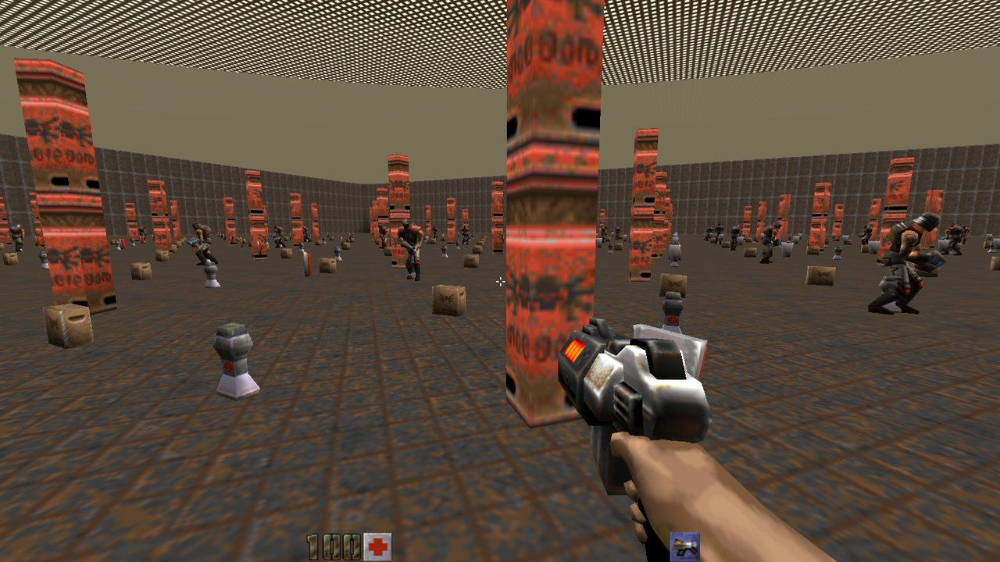
The work runs in six milestones, each building on the formats the one before it settles.
Forked Yamagi Quake II Remaster, one-command build, screenshot regression check, timedemo benchmark.
60 Hz simulation, bigger worlds, thousands of entities, IQM models, true-color textures, modern sound formats, packet splitting and savegames that survive code changes.
Client game module, shared movement code, data-driven definitions, mod stacking, monster navigation, animation system and an in-game editor for entities and lights. Done so far: the client game module with its HUD and effects, player movement as game code, and a first mod made without engine changes.
Frontend / backend split with OpenGL on its own thread, following the Doom 3 BFG design.
Materials with normal and specular maps, real-time per-pixel lights and shadow maps, lights imported from the stock maps, a light editor. Lightmaps stay as the low-end option.
Sound occlusion and reverb, large outdoor spaces, hot reload, crash reports, a Blender asset pipeline.
M2 moves what a mod might change out of the engine and into game code. The first pieces are in the M2 preview: the HUD, player movement and every effect the server triggers now come from the game library, and the re-release's episodes are playable from the menu.
With the 2023 re-release data, the Game menu lists Quake II, The Reckoning, Ground Zero, Call of the Machine and Quake II 64, each starting with its own intro. Map texts come translated from the re-release's localization files.
The HUD is drawn by id's re-release HUD code, built into the game library through the re-release's own client game interface. Explosions, beams, muzzle flashes, trails and footsteps come from the game library too.
Player movement lives in the game library and the client predicts with the same code, so a mod that changes movement keeps prediction smooth. Lifts no longer jitter while you ride them.
The test mod in mods/testmod adds the Test Gun, a new weapon with its own effect, by
changing game code only. The engine binary stays the same.
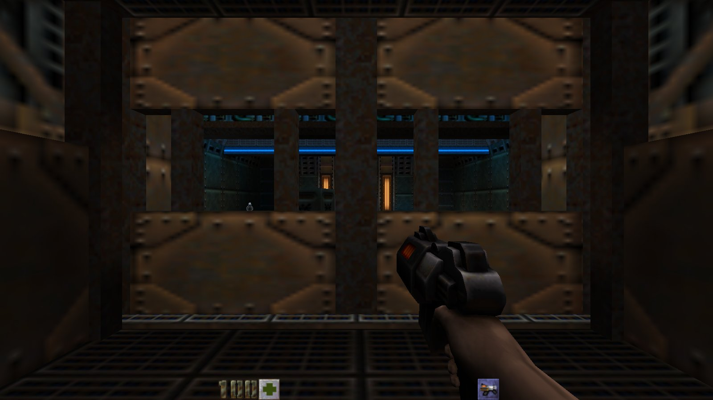
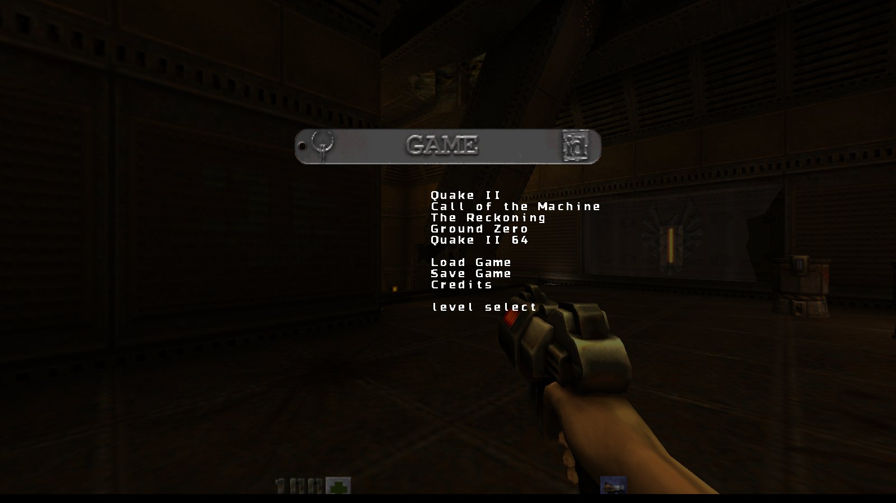
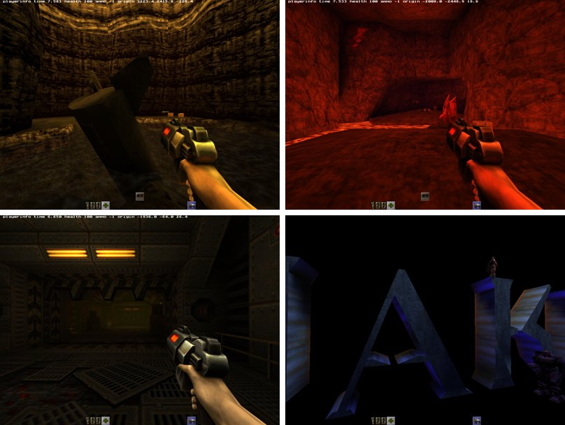
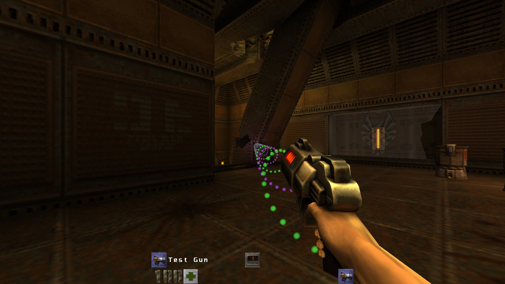
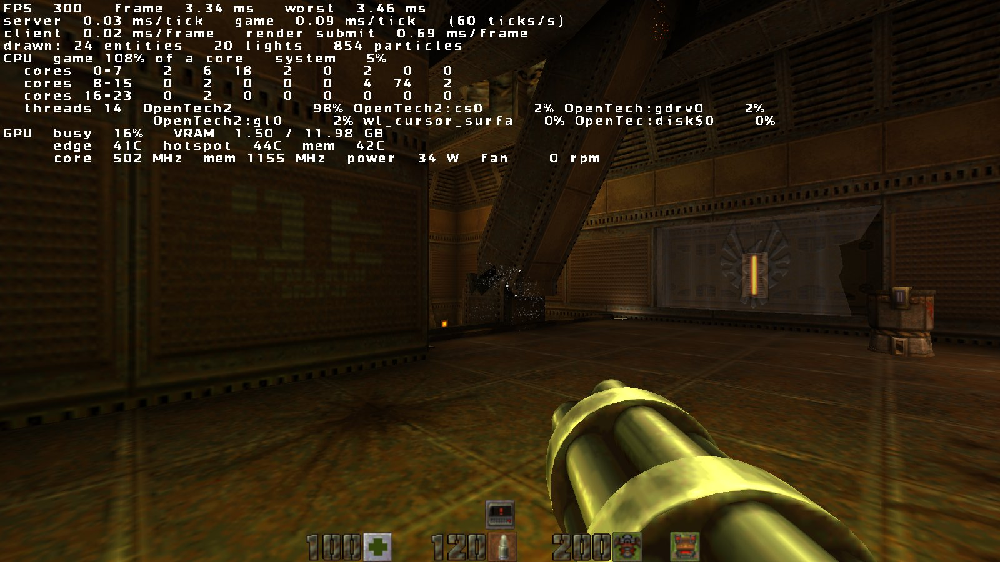
cl_perf 1: frame, server, client and render times, load of every CPU core,
the busiest threads, and GPU load, memory, temperatures and clocks.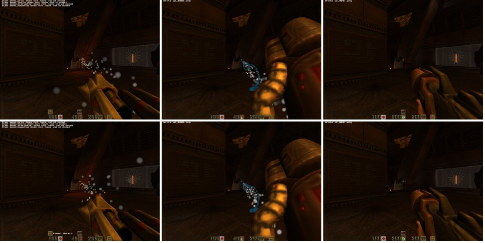
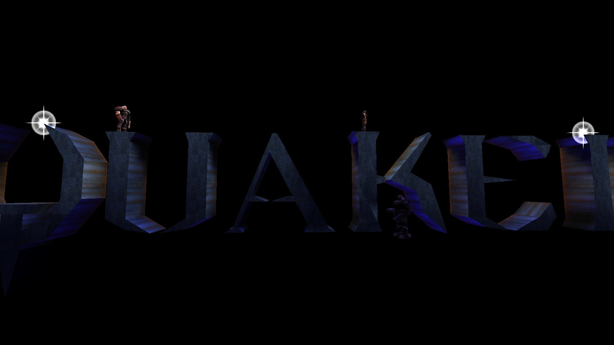
The server runs 60 frames a second (stock: 10). Physics, weapons and monster AI run every frame; monster animation keeps its 0.1 s rhythm with client smoothing. Doors, fire rates, rockets and monster speed measure the same at 10 and 60 Hz.
A 3800 entity stress map (300 soldiers, 500 spinning pillars, 3000 items) runs with a server frame under 1 ms idle and about 3 ms in a full fight. Pushers ask the area tree for nearby entities instead of checking all of them.
Positions travel as floats, so maps reach past the old ±4096 unit edge. Extended QBSP maps and decoupled BSPX lightmaps, compiled with ericw-tools.
IQM is the project's model format: one file with mesh, skeleton and named animations, exported straight from Blender.
Any size, no .wal needed: checked with 300x200, 1024x1024 and 4096x4096 textures.
24 bit, 32 bit and float WAV, any sample rate, minutes long, mono or stereo, on both sound backends.
Every saved field is stored with its name, so new builds keep loading old saves after fields are added, removed or reordered.
Big updates are split into 1200 byte packets instead of relying on IP fragmentation; tested with 25% packet loss. The rate limiter works at any tick rate.
| Limit | Quake II | OpenTech2 M1 |
|---|---|---|
| Server frames per second | 10 | 60 |
| Map coordinates | ±4096 | float (tested to ±6144) |
| Entities | 1024 | 8192 |
| Models per map | 256 | 1024 |
| Sounds per map | 256 | 1024 |
| Images per map | 256 | 2048 |
| Entities drawn per frame | 128 | 4096 |
| Dynamic lights | 32 | 128 |
| Particles | 4096 | 16384 |
| Sound channels | 32 | 128 |
From the test maps that check each change. Every check is a script in the repository.
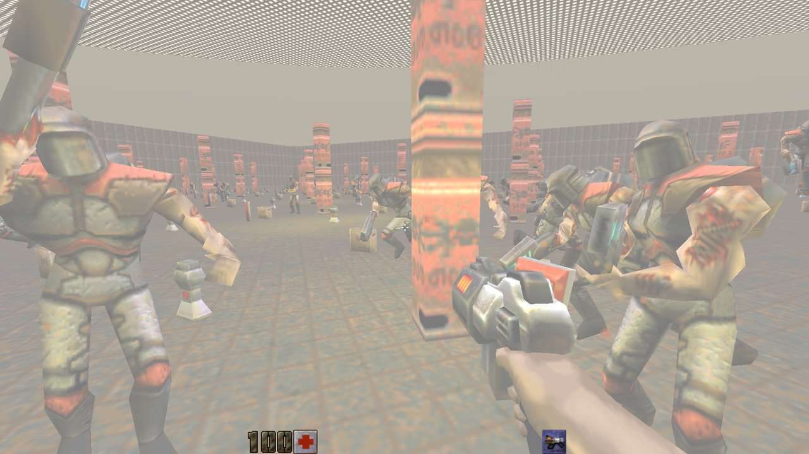
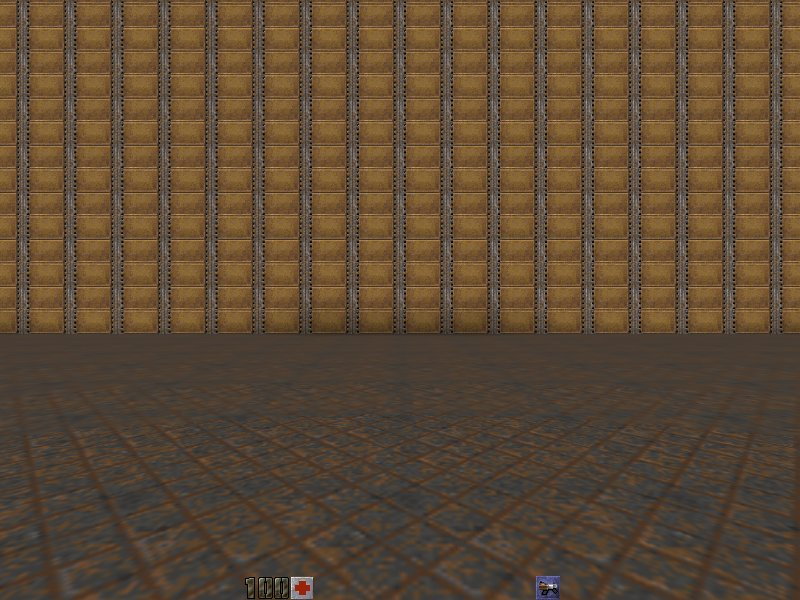
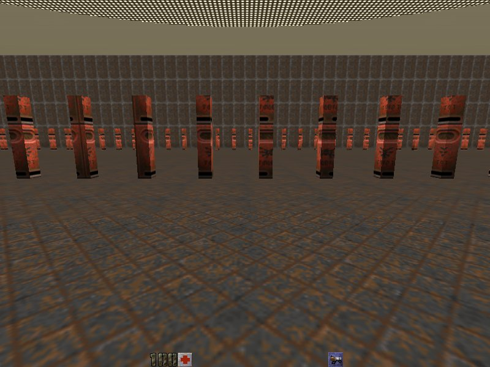
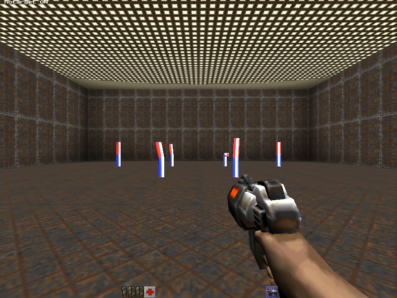
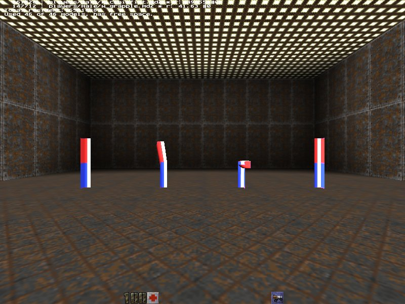
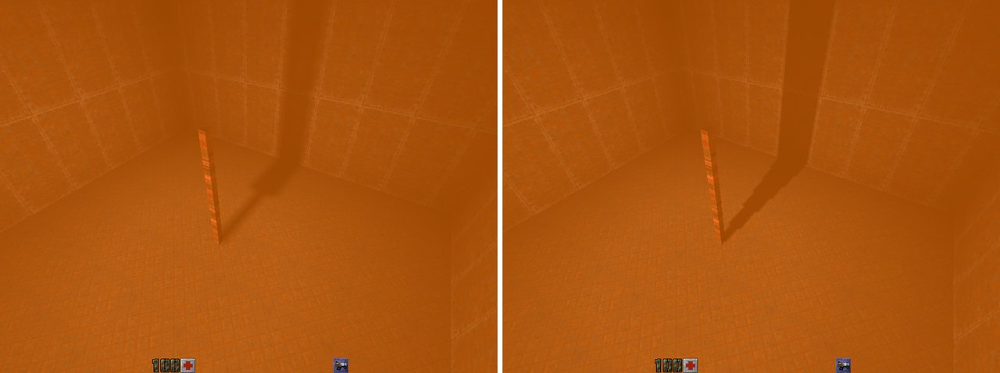
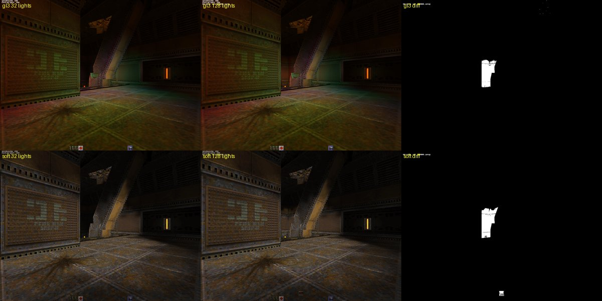
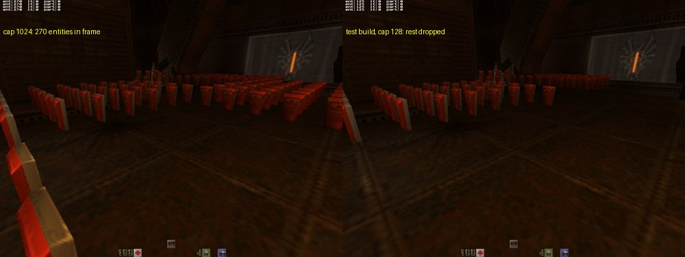
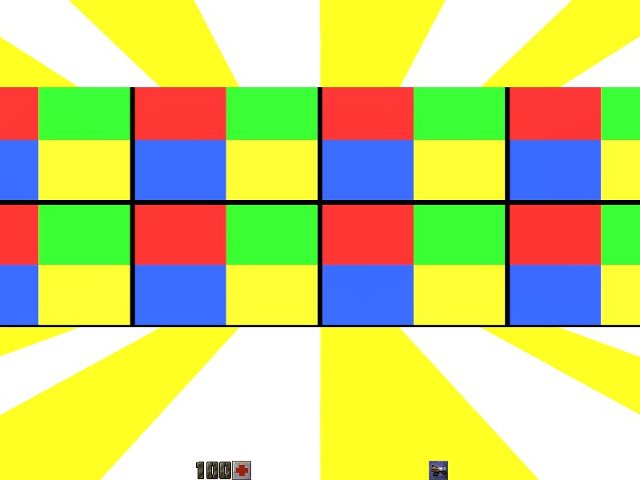
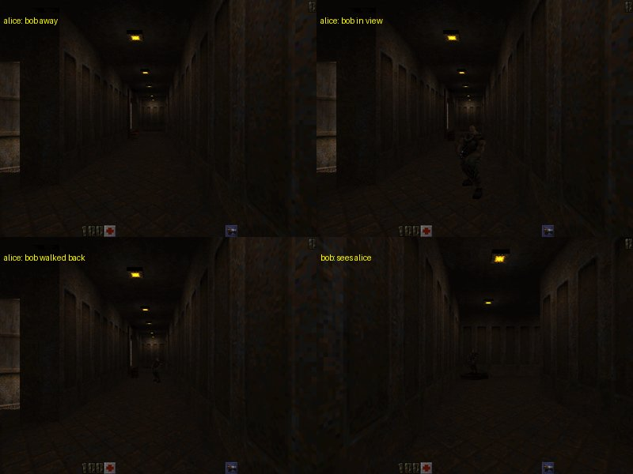
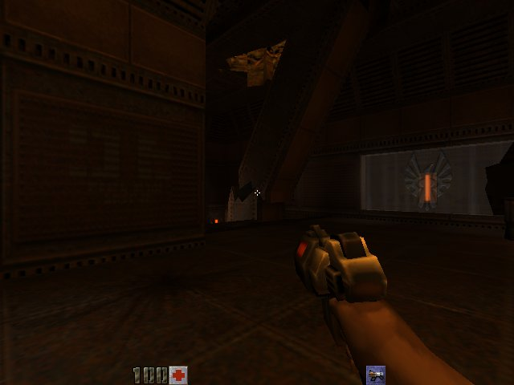
Download the M2 preview for
Windows (64 or 32 bit) or Linux x86_64, an interim build of the modding work so far. You need the Quake II
game data (Steam or GOG, the folder holding baseq2).
Windows: OpenTech2.exe -datadir "C:\Path\To\Quake 2"
Linux: ./OpenTech2 -datadir "/path/to/Quake 2"The Linux build needs SDL3 and OpenAL. Network protocol and save format changed in M1: OpenTech2 does not join stock Quake II servers.
git clone https://github.com/Rizilla-OG/OPtech2
cd OPtech2
cmake --workflow --preset defaultOutput lands in build/release/. The README lists the checks: screenshots,
benchmark, multiplayer, packet splitting, tick rate, limits, stress, IQM, textures, sound and savegames.
Compile with ericw-tools 2.0.0-alpha11:
qbsp -qbism, light -world_units_per_luxel for sharp lightmaps.
tools/get_ericw_tools.py fetches the tested version.
Export IQM from Blender with the IQM exporter. Each animation becomes a frame group; an .iqm next to a stock model replaces it.
tools/install_test_content.py builds the IQM showcase, limits and stress maps and a
sound demo, and adds them to your game folder.
The game library draws the HUD (re-release client game API), runs player movement and draws effects
through the effects extension; fxtest [type] sends a temp entity to try an effect. See
mods/testmod for a complete example. After changing a saved struct,
tools/gen_save_fields.py updates the savegame field table.